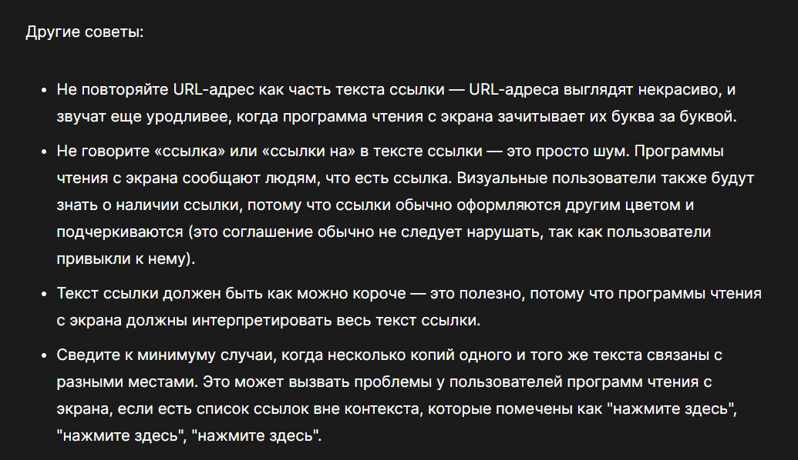
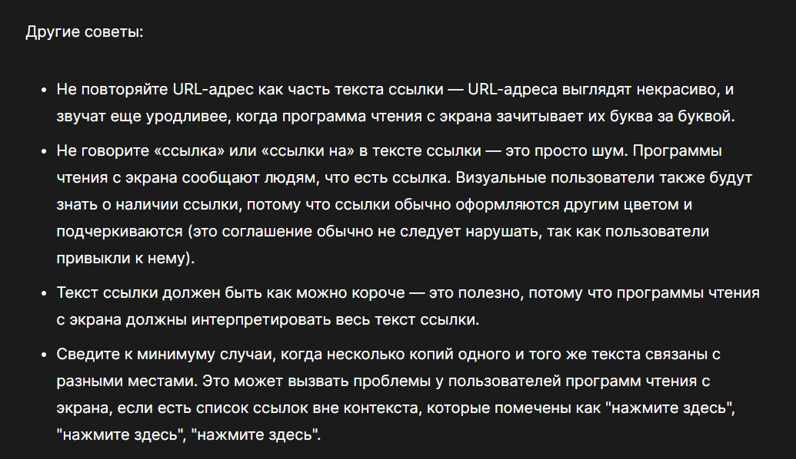

Unchore
My Learning, Practing website
I ill Learning on this page, test some new knowladge, practic, and somemuch else, this page also made first also this page good experience it performs 3 main functions, such as:
work with text
- I can practic
- It's convenient
-
It looks beautiful
- in general, this view makes my experience better and simplifies everything
- It probably has a very positive effect on my confidence
- bread
- milk
- eggs
- hummus
- Drive to the end of the road
- Turn right
- Go straight across the first two roundabouts
- Turn left at the third roundabout
- The school is on your right, 300 meters up the road
Quick hummus recipe
This recipe makes quick, tasty hummus, with no messing. It has been adapted from a number of different recipes that I have read over the years.
Hummus is a delicious thick paste used heavily in Greek and Middle Eastern dishes. It is very tasty with salad, grilled meats and pitta breads.
Ingredients
- 1 can (400g) of chick peas (garbanzo beans)
- 175g of tahini
- 6 sundried tomatoes
- Half a red pepper
- A pinch of cayenne pepper
- 1 clove of garlic
- A dash of olive oil
Instructions
- Remove the skin from the garlic, and chop coarsely
- Remove all the seeds and stalk from the pepper, and chop coarsely
- Add all the ingredients into a food processor
-
Process all the ingredients into a paste.
- If you want a coarse "chunky" hummus, process it for a short time.
- If you want a smooth hummus, process it for a longer time.
For a different flavor, you could try blending in a small measure of lemon and coriander, chili pepper, lime and chipotle, harissa and mint, or spinach and feta cheese. Experiment and see what works for you.
Storage
Refrigerate the finished hummus in a sealed container. You should be able to use it for about a week after you've made it. If it starts to become fizzy, you should definitely discard it.
Hummus is suitable for freezing; you should thaw it and use it within a couple of months.
I'm glad you're not late.
I'm glad, you weren't late.
Эта жидкость обладает высокой токсичностью.
Я рассчитываю на вас. Не опаздывайте!
The hypperlinks
Im creating link to the mozilla website
 

Помните вы всегда можете Скачать наш сайт и отредактировать так как пожелаете!
advenced text formatting
- aside
- In drama, where a character shares a comment only with the audience for humorous or dramatic effect. This is usually a feeling, thought, or piece of additional background information.
- In writing, a section of content that is related to the current topic, but doesn't fit directly into the main flow of content so is presented nearby (often in a box off to the side.)
- soliloquy
- In drama, where a character speaks to themselves, representing their inner thoughts or feelings and in the process relaying them to the audience (but not to other characters.)
The quote element — <q> — is
intended for short quotations that don't require paragraph breaks.
Here is a blockquote:
The HTML
<blockquote>Element (or HTML Block Quotation Element) indicates that the enclosed text is an extended quotation.
According to the MDN blockquote page:
The HTML
<blockquote>Element (or HTML Block Quotation Element) indicates that the enclosed text is an extended quotation.
The quote element — <q> — is
intended for short quotations that don't require paragraph breaks.
— MDN q page.
Hello and welcome to my motivation page. As Confucius' quotes site says:
It does not matter how slowly you go as long as you do not stop.
I also love the concept of positive thinking, and The
Need To Eliminate Negative Self Talk
(as mentioned in Affirmations for Positive Thinking.)
We use HTML Hypertext Markup Language, to structure our web documents.
I think Rev. Green did it in the kitchen with the chainsaw.
Chris Mills, Manchester, The Grim North, UK
Chris Mills
Manchester
The Grim North
UK
- Tel: 01234 567 890
- Email: me@grim-north.co.uk
My birthday is on the 25th of May 2001.
Caffeine's chemical formula is C8H10N4O2.
If x2 is 9, x must equal 3 or -3.
const para = document.querySelector('p');
para.onclick = function() {
alert('Owww, stop poking me!');
}
You shouldn't use presentational elements like <font> and
<center>.
In the above JavaScript example, para represents a paragraph element.
Select all the text with Ctrl/Cmd + A.
$ ping mozilla.org
PING mozilla.org (63.245.215.20): 56 data bytes
64 bytes from 63.245.215.20: icmp_seq=0 ttl=40 time=158.233 ms
multimedia

This bones of T-rex founded by arheollog Mark Twen